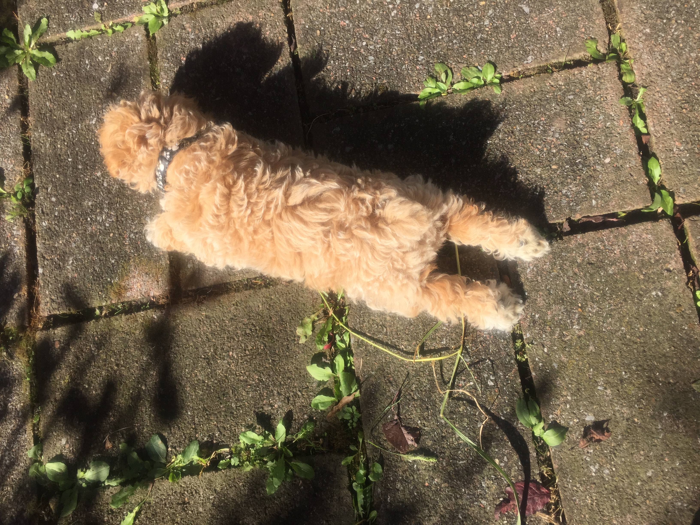
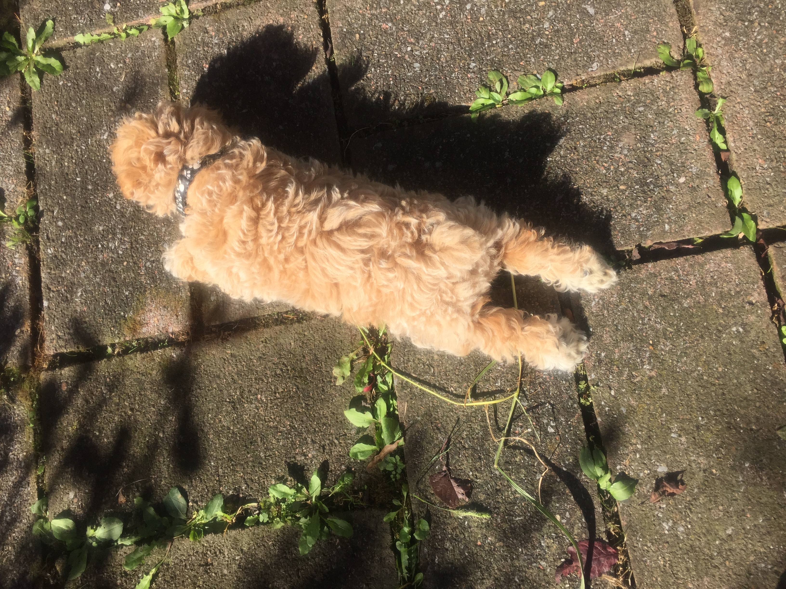
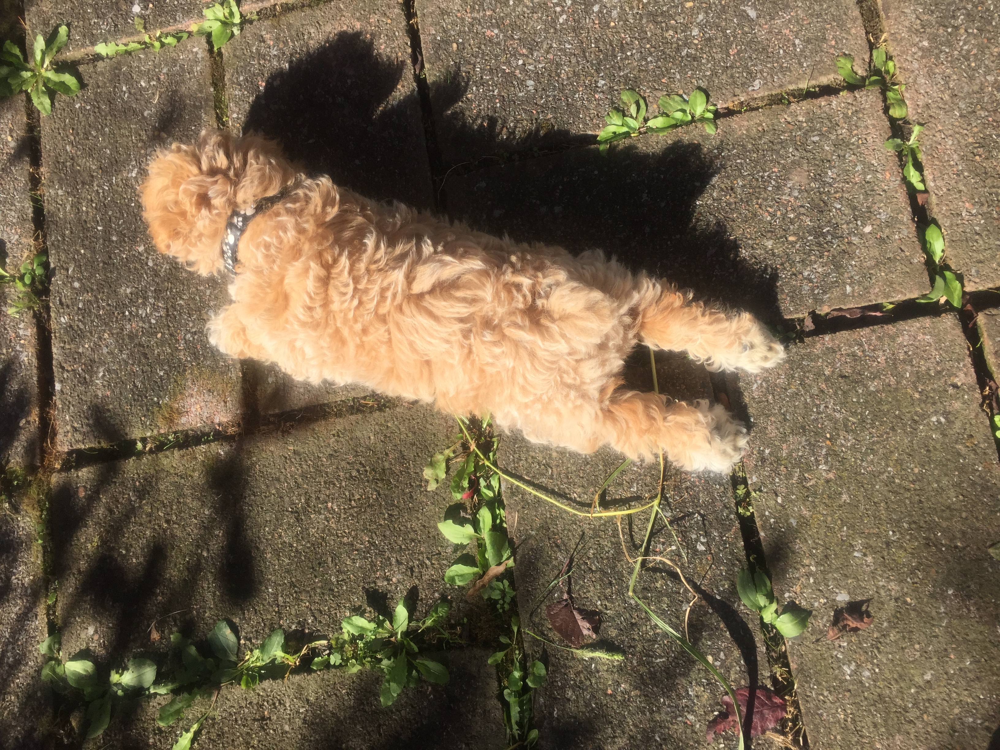
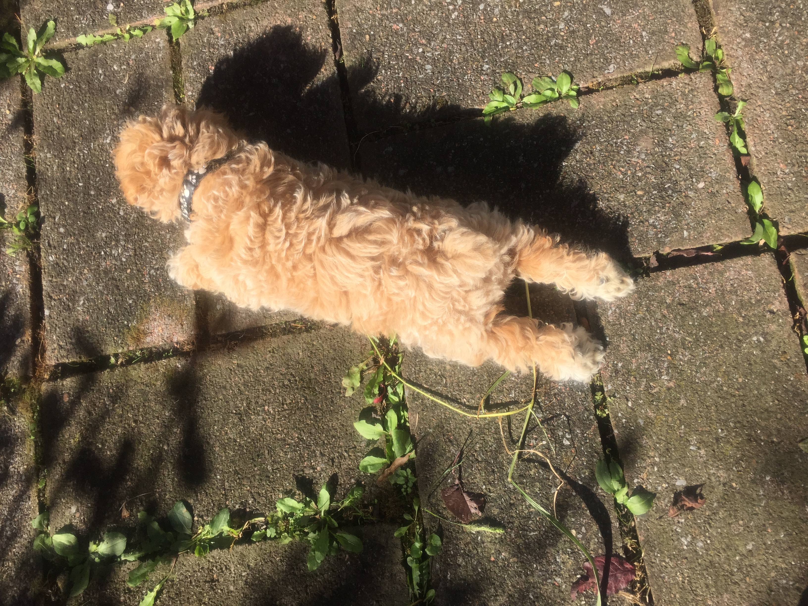
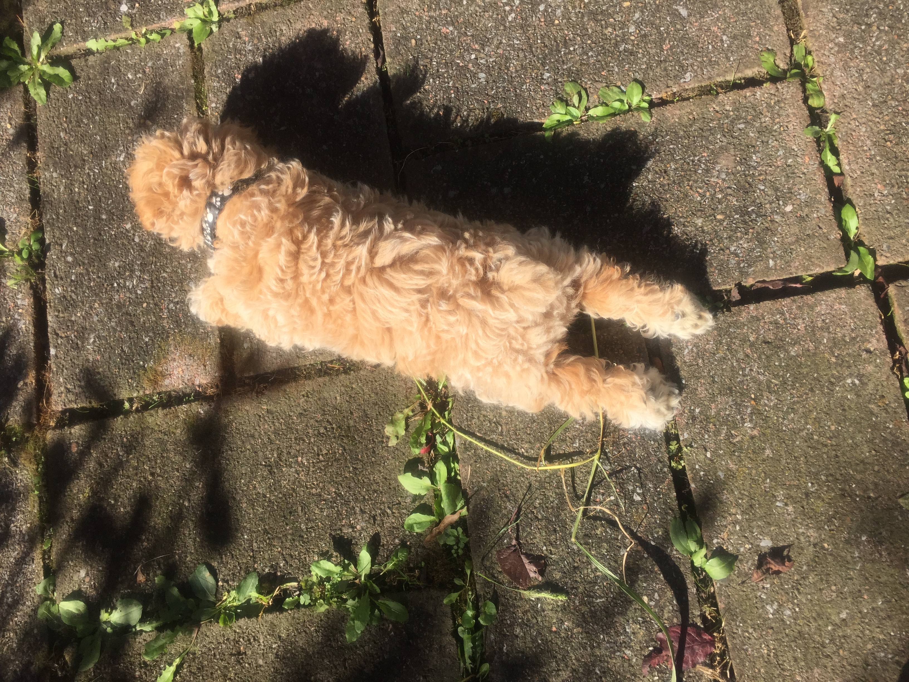

baby cam
|
cam doing things
|
why cam is good
cam
he was born in 2016 and he is a bichon poodle mix
cam doing things

why cam is good
sometimes he falls down the stairs
he is soft
he runs fast
his tongue is very large
 


